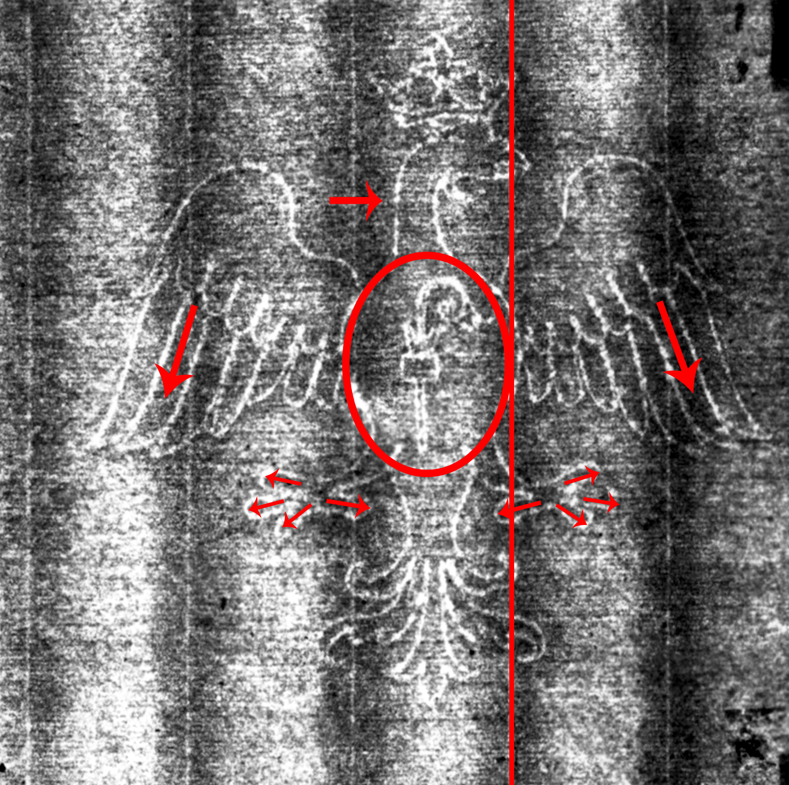
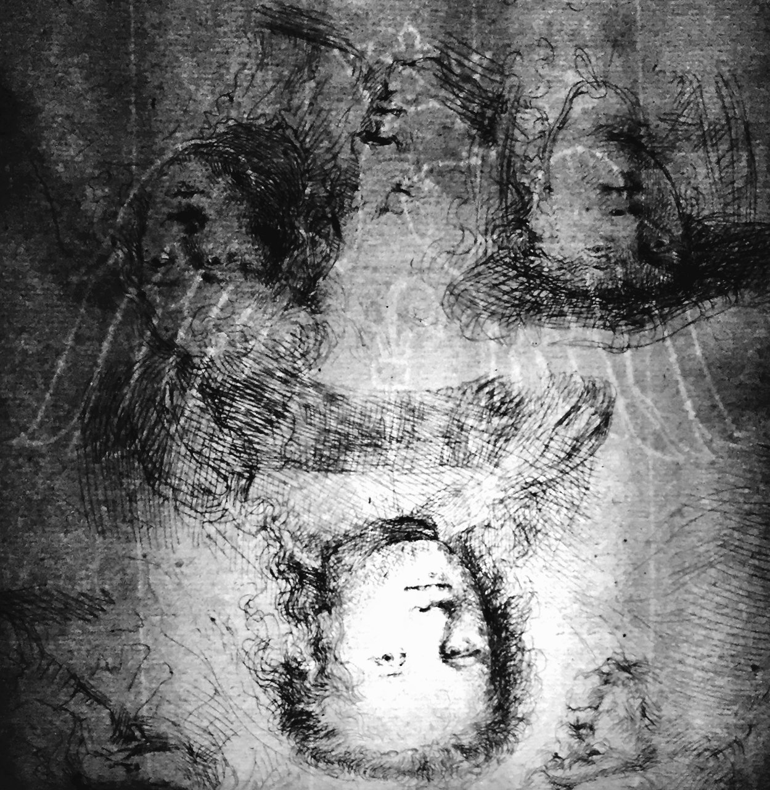

Single-Headed Eagle
See branch diagram↩ Back one step ↻ Restart this branch
Your watermark is Eagle, Single-Headed, A.a.a. (or twinmark A.a.b.)
Watermark A.a.a. can be distinguished by three features: its eagle's' wings point downward, it has a smooth neck without ruffles, and it has four claws that extend from its foot.
________________________________________________________________________
This watermark can be found on the print Studies of the heads of Saskia and others, 1636, at the Metropolitan Museum of Art, New York.
NOTE: The WIRE project believes that the twinmark to this watermark, Eagle, Single-Headed A.a.b., is found on an impression of Studies of the heads of Saskia and others, 1636, held in a private collection, which we have provided as a comparative image for this exercise.
A twinmark is one of two nearly identical watermarks affixed to a pair of paper molds used in rotation to make a batch of paper. The watermark in the image we have supplied is notably different from A.a.a. since there is an angular bend in the beak-side wing feather that causes the feathers to appear distorted.. Another impression of the same print, Studies of the heads of Saskia and others, held at the Metropolitan Museum of Art, contains an A.a.a. watermark. This provides further evidence that watermark A.a.b. (lower right) is a twinmark of A.a.a (lower left).
 